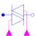
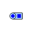

PolyphaseTriacTriodes for alternating current |

|
Diagram
{kind=link}
Information
This information is part of the Modelica Standard Library maintained by the Modelica Association.
Simplified model of m
triodes for alternating current, each built from two antiparallel thyristors.
thyristor1 has to be fired during the positive halfwave of the voltage.
thyristor2 has to be fired during the negative halfwave of the voltage.
Note: A real triac is fired in positive direction (thyristor1) by a positive gate current and in negative direction (thyristor2) by a negative gate current.
The triac goes in blocking condition when the current falls to zero.
This behaviour is simulated by the two firing gates fire1 and fire2:
fire1=falseandfire2=false: gate current = 0, stay in blocking conditionfire1=trueandfire2=false: gate current > 0, firethyristor1fire1=falseandfire2=true: gate current < 0, firethyristor2fire1=trueandfire2=true: forbidden
Parameters (7)
| m |
Value: 3 Type: Integer Description: Number of phases |
|---|---|
| mh |
Value: m Type: Integer Description: Number of heatPorts=number of phases |
| useHeatPort |
Value: false Type: Boolean Description: = true, if all heat ports are enabled |
| T |
Value: fill(293.15, mh) Type: Temperature[mh] (K) Description: Fixed device temperatures if useHeatPort = false |
| Ron |
Value: 1e-5 Type: Resistance (Ω) Description: Forward state-on differential resistance (closed resistance) |
| Goff |
Value: 1e-5 Type: Conductance (S) Description: Backward state-off conductance (opened conductance) |
| Vknee |
Value: 0 Type: Voltage (V) Description: Forward threshold voltage |
Connectors (5)
| plug_p |
Type: PositivePlug Description: Positive polyphase electrical plug with m pins |
|
|---|---|---|
| plug_n |
Type: NegativePlug Description: Negative polyphase electrical plug with m pins |
|
| heatPort |
Type: HeatPort_a[mh] Description: Conditional heat ports |
|
| fire1 |
Type: BooleanInput[m] |
|
| fire2 |
Type: BooleanInput[m] |
Components (3)
|  | plugToPins_p |
Type: PlugToPins_p |
|---|---|---|
| plugToPins_n |
Type: PlugToPins_n |
|
| triac |
Type: SinglePhaseTriac[m] |
Used in Examples (1)
|
Modelica.Electrical.PowerConverters.Examples.ACAC Soft start of an induction machine |